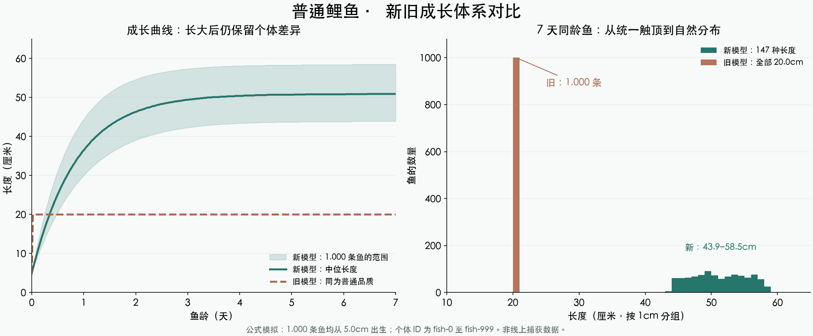

本页保留上一版鱼种体型上限设计。最新方向请从总预览的“45米巨物 · 成长重设计”查看。
数值调整报告 · 2026-11-01 · 代码已实现，尚未部署
每条鱼，都有自己的长大过程
鱼种决定合理体型，品质增加潜力。同种、同品质、同龄的鱼，也保留固定的个体差异。成长自然发生，无需玩家操作。
同龄普通鲤鱼的长度种类1 种 → 147 种1,000 条、7 天、同为 5cm 出生
新模型的样本长度43.9–58.5cm中位数 50.9cm
成长节奏前期快，后期缓达到 90% 后继续缓慢成长
新旧模型对比

公式模拟，非线上捕获数据。ID 为 fish-0 至 fish-999；左图阴影为个体范围，右图按 1cm 分组。未包含捕捞、补鱼或脱钩。旧模型使用调整前默认 40m/7 天标准曲线，并被普通品质的 0.2m 上限截断。
体型与成长规则
每条鱼的潜力为「鱼种参考体型 × 品质倍率 × 个体系数」。个体系数固定在 75%–100%，成长时间再有 ±15% 差异；重启或离线补算不会重抽。出生长度为个体潜力的 12%–28%，最小 2cm。
| 品质 | 鱼种参考上限倍率 | 长完剩余空间 90% 的基准时间 |
|---|
| 普通 | 0.65 | 2 天 |
| 优良 | 0.80 | 3 天 |
| 稀有 | 1.00 | 4 天 |
| 史诗 | 1.15 | 5 天 |
| 传说 | 1.30 | 7 天 |
| 神话 | 1.50 | 10 天 |
| 至尊 | 1.80 | 14 天 |
例如至尊泥鳅的潜力上界为 45.0cm，至尊中华鲟为 6.30m。小鱼种保持小体型，大鱼种才会成为巨物。以上为游戏设计值。
长度自动切换单位
| 范围 | 精度 | 示例 |
|---|
| 不足 1m | 0.1cm | 12.3cm、99.9cm |
| 1m 至不足 10m | 0.01m | 1.00m、6.30m |
| 10m 及以上 | 0.1m | 10.0m、12.4m |
数据按米保存，精度 0.001m。进位跨越边界时自动换档，例如 9.995m 显示为 10.0m。网页、移动端及桌面端共用相同显示规则。
存量处理与验证
下次服务启动时，一次性重算未钓获塘鱼，旧塘鱼可能变长或缩短。背包、图鉴、相册和历史排行不回写。尺寸变化会间接影响体重、售价及钓鱼难度，仍需后续验证整体挂机产量。
相关服务端测试 57 项、Unity 测试 17 项通过。服务端全量 112 项中有 1 项原有阶段数量断言失败；旧 A0 验收脚本也有现行数值与旧断言不一致的问题。详细口径见完整报告。
完整实现与验证报告 · 图表数据 · 矢量图